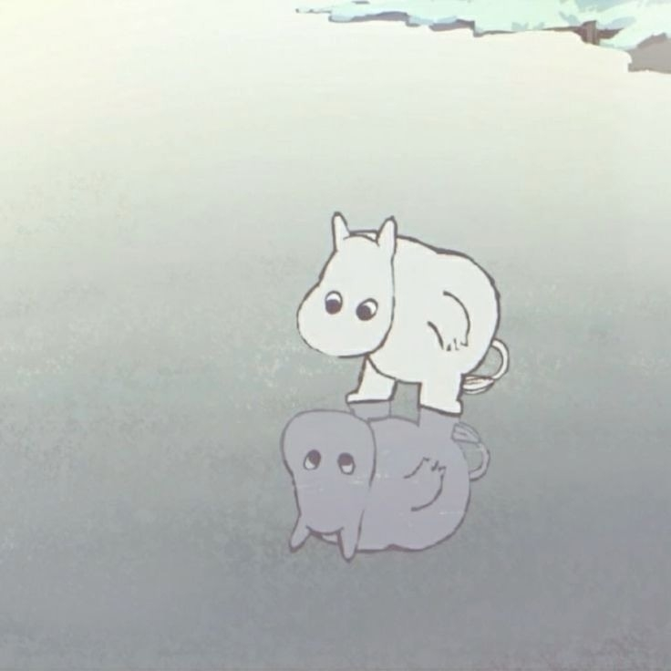
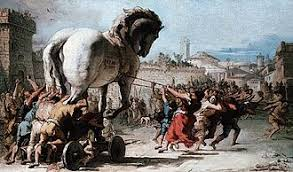
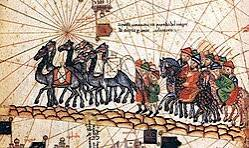
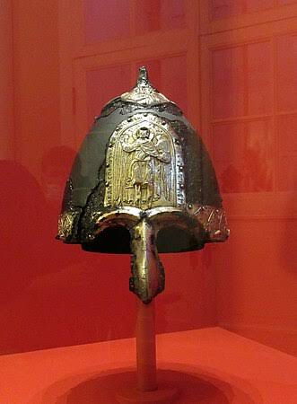
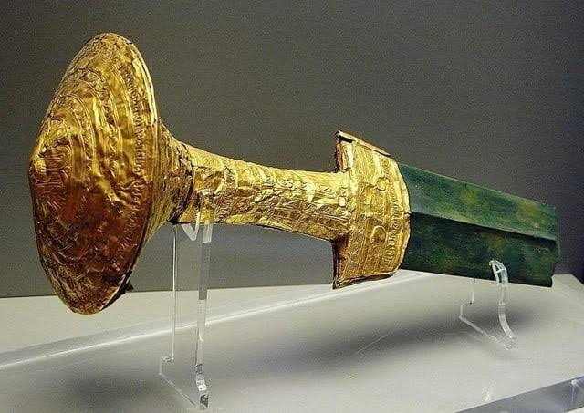
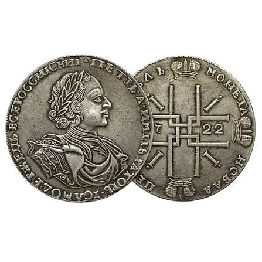

Эпоха Троянской войны
Реконструкция быта, вооружения и тактики микенской пехоты.
Историк и реконструктор

Реконструкция быта, вооружения и тактики микенской пехоты.

Полная реконструкция доспехов и вооружения дружинников князя Святослава.

Создание интерактивной исторической карты торговых маршрутов.


